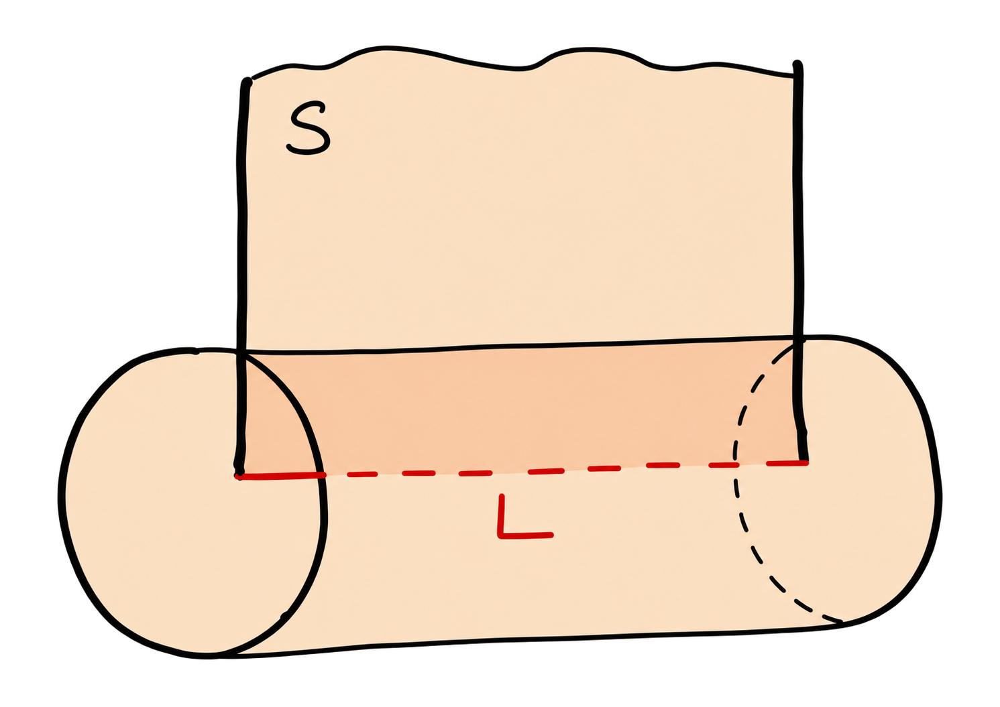
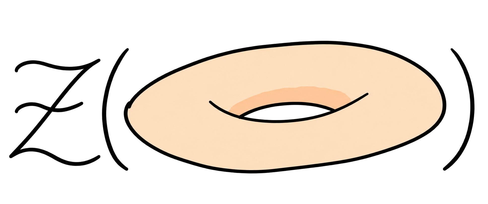
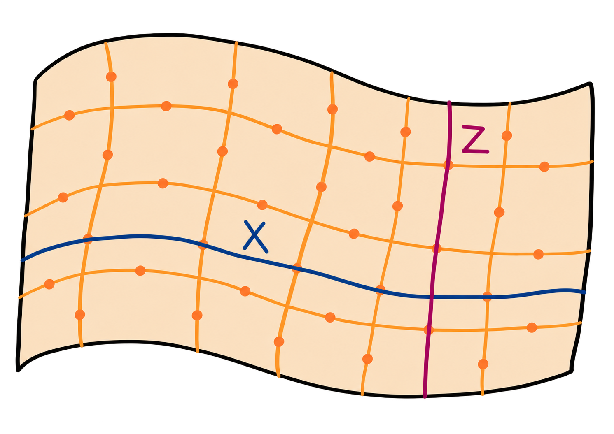

Research Areas

Generalized symmetries of field theories and lattice models
Symmetries describe ways in which a physical system can be changed without altering its underlying behaviour. A simple example is a wallpaper or tiled floor: shifting the pattern by one repeating unit leaves it looking unchanged. Similarly, symmetries in physics reveal hidden patterns that govern the behaviour of nature, making them one of the most fundamental tools for understanding and predicting physical phenomena.
My research explores how this idea extends into the quantum world. Quantum field theory (QFT), the mathematical framework describing elementary particles and the fundamental forces, possesses symmetries far richer than those encountered in everyday life. These generalized symmetries have emerged as a powerful way of understanding quantum systems, revealing unexpected connections between different areas of physics. A central question is which generalized symmetries are physically possible. Fundamental physical principles, such as locality, the idea that objects can only directly influence their immediate surroundings, place strong restrictions on the symmetries that quantum systems can possess. Understanding these restrictions is essential for determining which generalized symmetries can arise in nature.
In a QFT, generalized symmetries are implemented by certain special operators called topological operators whose correlation functions only depend on the topology of the submanifolds on which they are defined rather than its geometric details. These operators are highly constrianed to the extent that their construction and classification is amenable to a bootstrap approach. My research involves constraining the possible generalized symmetries of QFTs in various dimensions using this "topological boostrap".

Topological quantum field theories
Topological quantum field theories (TQFTs) are special QFTs where all operators are topological. Since topological operators implement symmetries, these can be thought of as QFTs in which all operators implement a symmetry. Physically, they arise as the low-energy limits of various QFTs and quantum lattice models. They also play an important role in characterizing the action of generalized symmetries on general QFTs as any QFT with a given generalized symmetry can be realized on the boundary of a corresponding TQFT.
A TQFT is not merely a collection of topological operators; it must also satisfy various consistency conditions that ensure these operators define a consistent QFT in their own right. My research involves studying TQFTs through the “topological bootstrap”, supplemented by these additional constraints. My earlier work focused on certain transformations in the space of TQFTs known as Galois conjugations, as well as on identifying invariants of TQFTs under these transformations. I am currently developing a systematic method for gauging non-invertible symmetries of TQFTs. I also study entanglement measures for the ground states of quantum lattice models, with the goal of identifying quantities that completely determine the corresponding continuum TQFT.

Quantum error correction and field theories
Quantum computers have the potential to solve problems beyond the reach of classical computers, from simulating complex quantum systems to discovering new materials. Their practical realisation depends on protecting fragile quantum information from errors. Error correction underpins everyday technologies such as 5G and WiFi. Quantum error-correcting codes (QECCs) achieve the same for quantum computers by storing information across many qubits.
Many QECCs are realized using the ground states of quantum lattice models. In the continuum limit, these models are described by QFTs that capture universal features of the corresponding QECCs, including aspects of their fault-tolerant properties. My research explores how QECCs can be constructed directly from continuum QFTs. My work has shown that certain quantum stabilizer codes can be constructed from the spectrum of local and twisted-sector primary operators in RCFTs. More recently, I have interpreted measurements in Floquet codes as non-invertible symmetries of a TQFT. I have also shown that error detection in Floquet codes can be characterized by the braiding of certain topological operators in the corresponding TQFT.